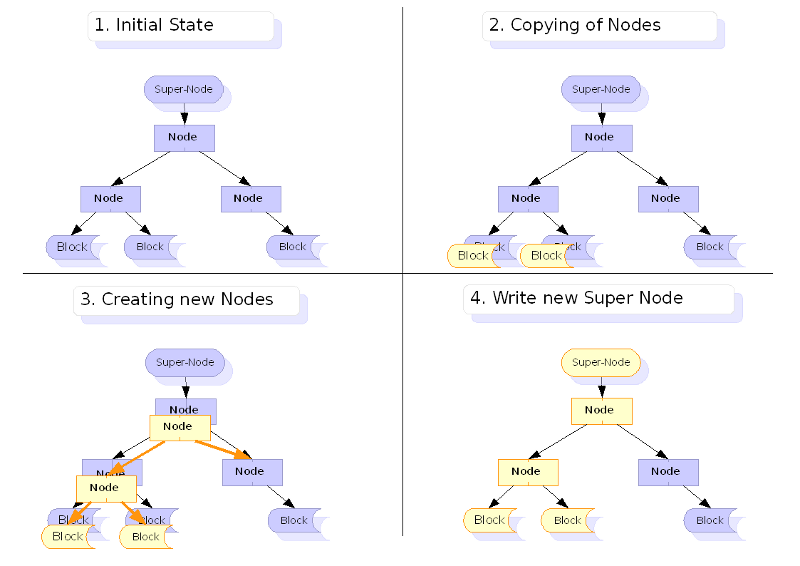
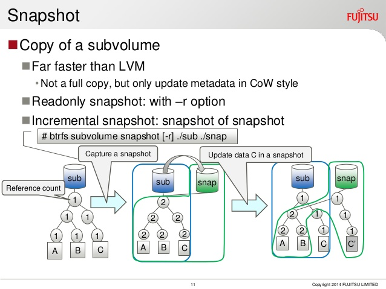

Open-up
Course 12 : BTRFS

Speaker : Benoit Tellier
Why this presentation ?
- Presentation of BTRfs capabilities
- Managing BTRFS
BTRFS feauture
Developpement started in 2010
2^64 max files
Taille maximale : 16 Eio (2^60 bytes)
Live defragmentation
Copy on write
Block checksum and correction
Snapshots
Snapshots can be exported to a file, and sent other the network
Easy RAID set-up
Compression
LZO, Snappy, gzip and LZ4
Beware of cascading writes
And many others...
Using BTRFS
Creating BTRFS
$ mkfs.btrfs /dev/sdX
# To specify default block size
$ mkfs.btrfs -L mylabel -n 16k /dev/partition
Managing RAID
mkfs.btrfs -d raid0 -m raid1 /dev/part1 /dev/part2
Converting EXT* to BTRFS
btrfs-convert /dev/partition
Disable COW for file/directory
$ chattr +C /dir/file
Compression
# Mount options
compress=zlib or compress=lzo
# To compress old files
$ btrfs filesystem defragment -r -v -clzo /
Sub-volumes
$ btrfs subvolume create /path/to/subvolume
$ btrfs subvolume list -p path
$ btrfs subvolume delete /path/to/subvolume
Used space
$ df -h /
Filesystem Size Used Avail Use% Mounted on
/dev/sda3 119G 3.0G 116G 3% /
$ btrfs filesystem df /
Data: total=3.01GB, used=2.73GB
System: total=4.00MB, used=16.00KB
Metadata: total=1.01GB, used=181.83MB
Live defragmentation
# Metadata of the folder
$ btrfs filesystem defragment /
# Also data
$ btrfs filesystem defragment -r -v /
Checking check-sum + correction
To start a (background) scrub on the filesystem which contains /:
$ btrfs scrub start /
To check the status of a running scrub:
$ btrfs scrub status /
Rebalance data
# btrfs balance start /
# btrfs balance status /
Snapshot
A snapshot is simply a subvolume that shares its data (and metadata) with some other subvolume, using btrfs's COW capabilities.
$ btrfs subvolume snapshot source [dest/]name
-r option for read-only